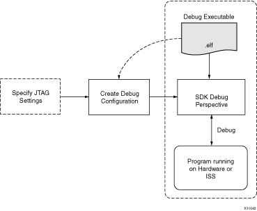

Run overview
Using SDK, you can run the software application on the hardware and ISS target. The program will run to termination, or you can stop the program at any time of execution. The run workflow is described in the following diagram:

The workflow is made up of the following components:
- Executable ELF File: To debug your
application, you must use a compiled Executable and Linkable Format (ELF) file. Refer to Build configurations for more information.
- Run Configuration: In order to launch the run session, you must create a debug configuration in SDK. This configuration captures options required to start a run session, including the executable name, processor target to run, and other information. Refer to Run configuration for more information.
- JTAG Settings: In most cases, SDK can automatically detect the JTAG settings and does not require special settings. Refer to JTAG settings for more information.
- Run Console: This is an XMD console view that lets you stop the program execution or terminate the run session.
You can repeat the cycle of modifying the code, building the executable and running the program in SDK. The program can be run on all supported debug targets.

Build configurations
Run configurations
JTAG settings

Running
Copyright © 1995-2009 Xilinx, Inc. All rights reserved.